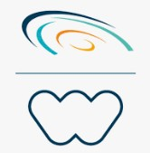

Lindenstr. 9, 35796 Weinbach
hideat.tekiehailu23@gmail.com
Führerschein: Klasse B
02/2025 - Jetzt

Fachinformatikerin in Anwendungsentwicklung
Praktikum ist für 02.03.2026 bis 05.10.2026 geplant.
Umschulung
DAA (Deutsche Angestellten- Akademie GmbH) 2 Jahre Programm.
Berufserfahrung
10/2021 – 10/2024
Meta | Social Technology Company (1st Level IT-Support)
Concentrix
Advisor Customer Service (1st Level IT-Support) bei Concentrix
Oktober 2021 - Heute
- Unterstützung der Werbetreibenden und Agenturen bei den verschiedenen Anfragen, die über die verschiedenen Kommunikationskanäle generiert werden.
- Bereitstellung von Pre- und Post-Sales-Support für alle Self-Service-Werbeprodukte.
- Produkt- und Tool-Support zur Verbesserung des Kundenerlebnisses. Nutzung von Tools und Systemen zur Identifizierung von Kundenanliegen, die in ihren Anfragen angesprochen werden.
- Eskalation von Kundenanfragen an die entsprechenden Gruppen zur Lösung.
- Zeitnahe Lösung von Themen, proaktive Kommunikation von Fortschritten an die Kunden und proaktives Erkennen von Bereichen, in denen die Kunden die Nutzung unserer Lösungen verbessern können.
- Aufrechterhaltung einer hohen Kundenzufriedenheit in Bezug auf Online-Werbung bei gleichzeitiger Repräsentation einer großen Marke auf Social-Media-Plattformen.
01/2021 bis 11/2021
Telefonische Kundenberater (1st Level IT-Support) INVIRES Tochterunternehmen der Webhelp Home Office
Concentrix + Webhelp
Telefonische Kundenberater (1st Level IT-Support) bei INVIRES (Webhelp)
Januar 2021 - November 2021
- Durchführung von Telemarketing-, Telesales-Projekten
- Betreuung von Infolines
- Beantwortung der Anfragen zu den angebotenen Produkten
- Eskalation der Anfragen zu den betroffenen Partnern
- Pflege der Kundendaten in das vorhandene System
07/2020 bis 10/2020

Receptionist My Cloud Transit Hotel Frankfurt Flughafen
Receptionist bei My Cloud Transit Hotel Frankfurt Flughafen
Juli 2020 - Oktober 2020
- Tätigkeiten an der Rezeption
11/2019 bis 03/2020

Receptionist & Facilities Assistant Franklin Templeton Investments, Frankfurt am Main
Receptionist & Facilities Assistant bei Hays Professional Solutions GmbH
November 2019 - März 2020
- Telefonzentrale bedienen und Gespräche weiterleiten
- Empfangsdienst für Kunden und Mitarbeiter anderer Niederlassungen
- Zugangskarten Vorbereitung und Ausgabe
- Rechnungen auf Richtigkeit prüfen und zur Zahlung weiterleiten
- Bestellungen vorbereiten und Lieferungen verfolgen
05/2019 bis 09/2019

Bildungszentrum Bauer GmbH
Weiterbildung bei Bildungszentrum Bauer GmbH
Mai 2019 - September 2019
- C1 Deutschkurs
12/2018 bis 03/2019

Reservation Agent (Sihot Hotelsoftware)
Motel One, Frankfurt am Main
Reservation Agent (Sihot Hotelsoftware) bei Motel One
Dezember 2018 - März 2019
- Annahme und Bearbeitung von Gruppen- und Messeanfragen
- Verarbeitung von Reservierungen und Eingabe in die Hotelsoftware
- Erstellung von Proforma- und Schluss-Rechnungen und Eingabe in die Hotelsoftware
- Prüfung von Kommissionsrechnungen
Aus- & Schulbildung
09/2005 bis 07/2008

Unity University TEVT College
SSOM (Secretarial Science and Office Management) Anerkannt durch die IHK als Kauffrau für Büromanagement
Dezember 2018 - März 2019
University TEVT College und Tegbareed TEVT Training Institute
Addis Abeba, Äthiopien
09/2006 bis 08/2007

Catering and Tourism Training Institute
Addis Abeba, Äthiopien
Ausbildung zur Hotelfachfrau /Front Office Operation
09/2003 bis 08/2005
Abschluss: High-SchoolShimelis Habte, Addis Ababa, Äthiopien
Sprachen

- Amharisch: Muttersprache
- Tigrinja: Muttersprache
- Englisch:fließend in Wort und Schrift
- Deutsch: sehr gute Kenntnisse (C1)
- Französisch: Grundkenntnisse, Sprachkurs DELF A2
EDV

- Microsoft Office: (Word, Excel, Outlook, HTML, CSS): Expertenkenntnisse
- Hotel software: OPERA, Fidelio, Sihot, HRS 3: Expertenkenntnisse
- Cloudbeds: Expedia, Booking.com, Orbitz, HRS Grundkenntnisse
- Airlinesoftware: Altea Grundkenntnisse
Zertifikate

British Airways:
- RampSafety
- Insafe Hands
- Fire-For Terminal Based Managers & Fire Wardens
- Flyability
- Business Integrity
- Ground Security and Disruptive Passenger
Radisson Blu 2012:
- "Yes I Can" Schulung zur Dienstleistungsphilosophie
Radisson Blu:
- Yes I Can/2012